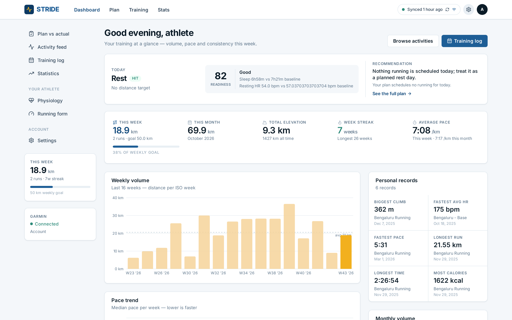
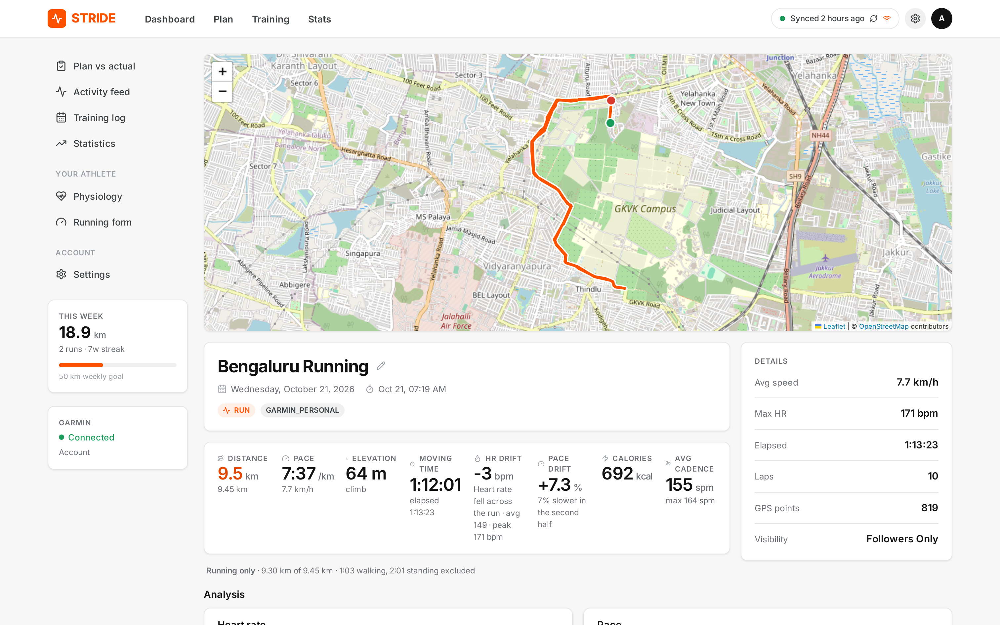
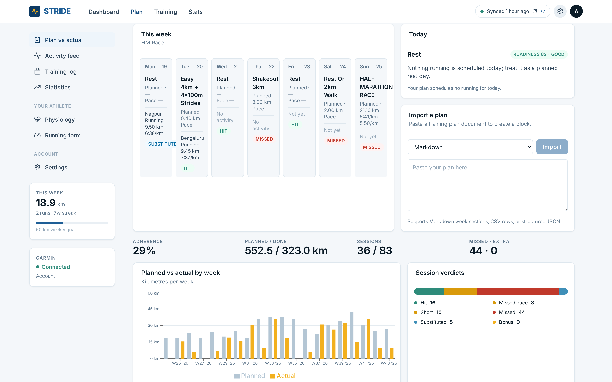
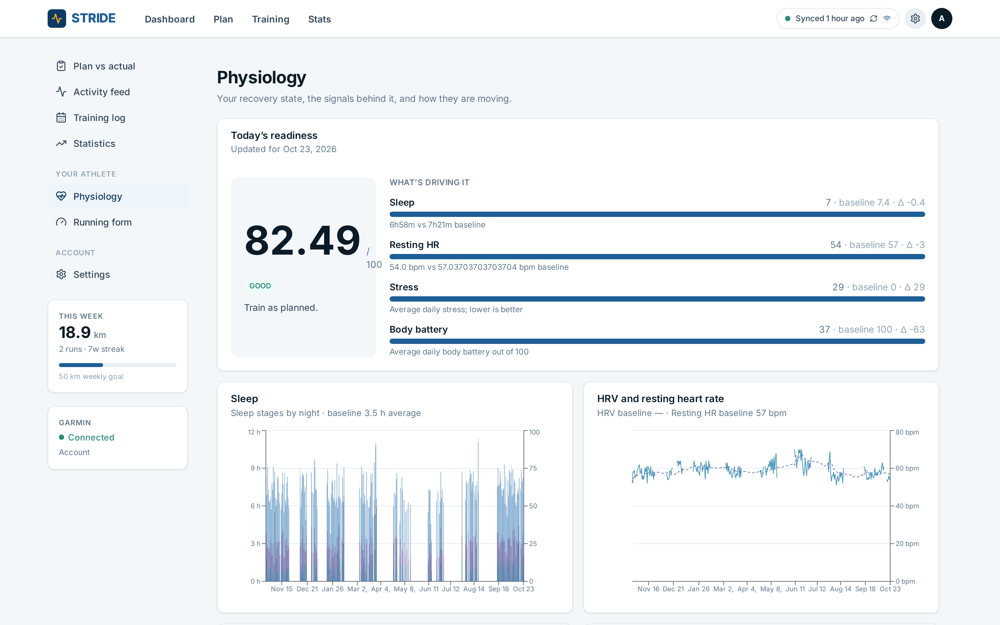
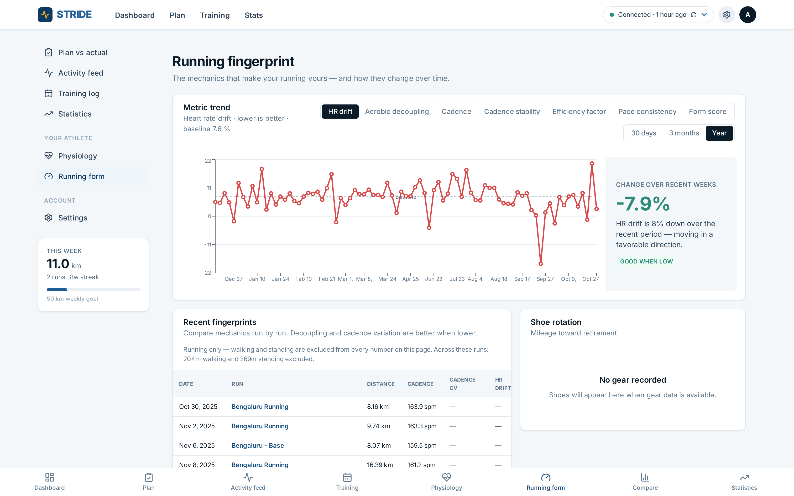
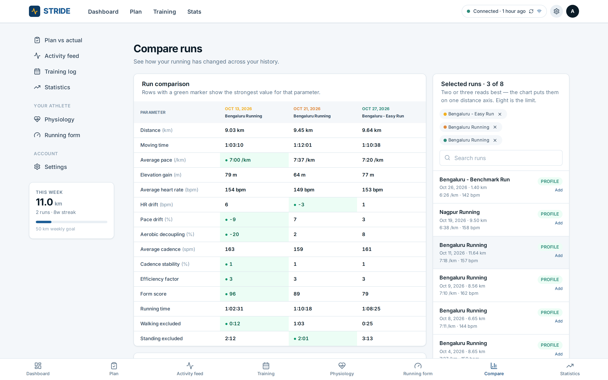
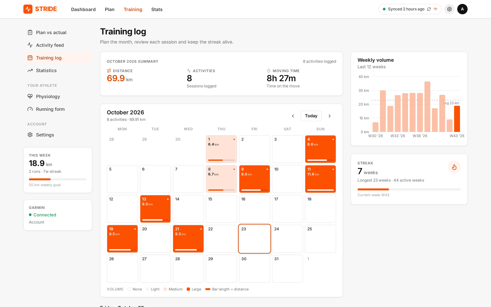
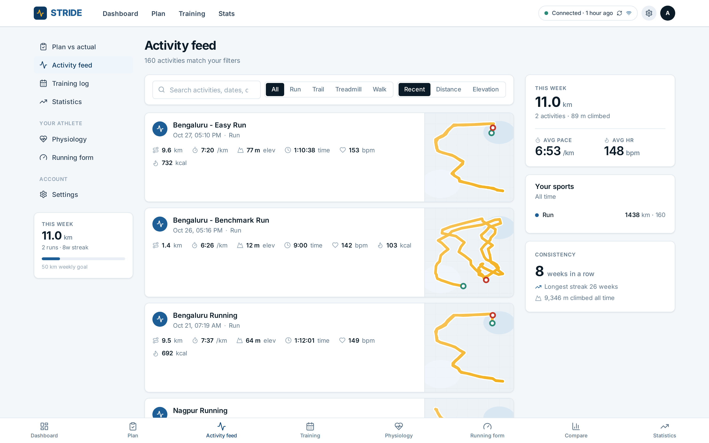

A private training log for runners who want to know what to do next — not just what they did. Your data stays on this phone.

The plan, the readiness and one recommendation — before you lace up.

Real GPS track, per-second heart rate, and splits rebuilt over the running only.

Your 20-week plan against your real runs — every session scored, with a reason for every miss.

Sleep, resting heart rate, stress and body battery, rolled into a readiness score you can see the drivers of.

Cadence stability, heart-rate drift, aerobic decoupling and form — across every run you have done.

Both resampled onto one distance axis, so you can see whether you actually got fitter.

Volume, streaks and the plan, week by week.

Every run, with its route.